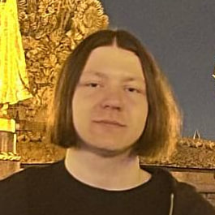
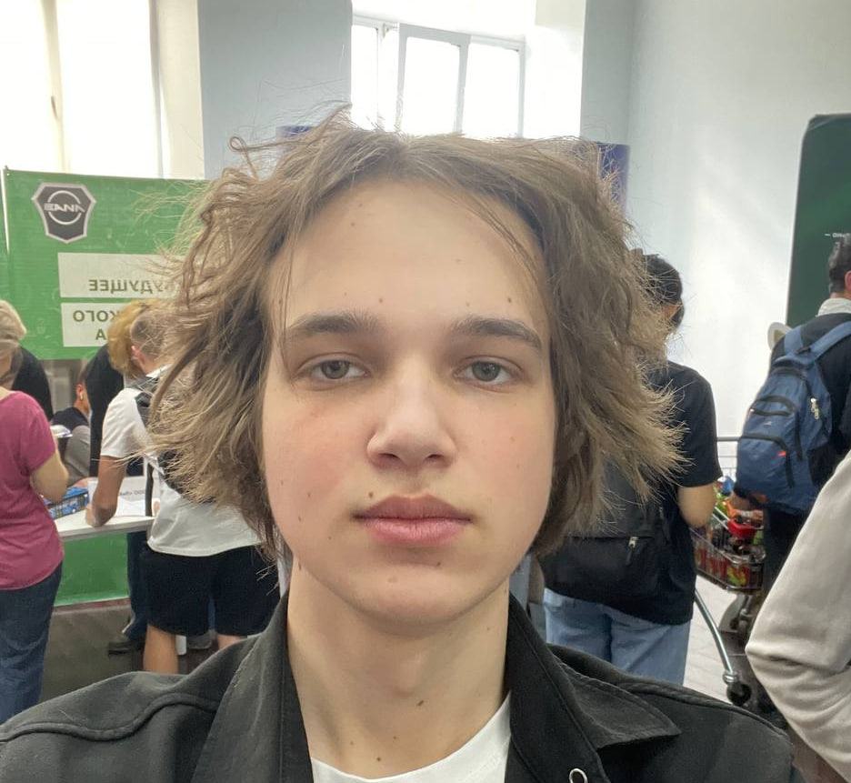

Участники проекта
-

Нестерчук Антон Васильевич (группа 241-326)
Роль: Разработка интерфейса
Вклад в проект: Антон разработал цель по SMART, а также сделал PEST. Дополнительно выполнял задачи по разработке дизайна приложения.
Telegram: @tpAnswer4yourself
GitHub: AntonNesterchuk
Email: antohaN1970@gmail.com
-

Стороженко Святослав Валерьевич (группа 241-326)
Роль: Разработка интерфейса
Вклад в проект: Святослав занимался созданием SWOT и анализом целевой аудитории проекта. Также работал над разработкой дизайна приложения
Telegram: @pojiloykaban
GitHub: StorozhenkoSvyatoslav
Email: svyatoslavstorozhenko@mail.com